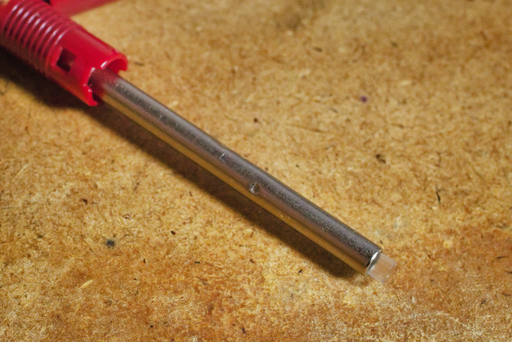

Bic クリックゴールドにジェットストリームのリフィルを入れて使うための TOHKIN BICクリックゴールド用リフィルアダプタジェットストリーム芯用とサラサのリフィルを入れて使うためのTOHKIN BICクリックゴールド用リフィルアダプタサラサ芯用ともちろん Bic クリックゴールド本体も購入した。
クリックゴールドのようなトラッドなスタイルのボールペンが好きなのだけれど最新の日本製インクリフィルの恩恵にもあずかりたい、というワガママな気持ちが満たされる組み合わせだ。
製品が早速届いたので添付の説明書通りにアダプタを取り付けたリフィルをクリックゴールドに入れてみた。
が、ノックしても芯が出ねぇ。正確に言うと芯が頭を覗かせるが固定されねぇ。
説明書を見てもおかしなことはしていない。
いろいろ悩んだ末、amazon の商品ページを見てみた。
にゃんと！！
クリックゴールドのクリップを見てみたら "JAPAN" の文字が！！
それだけでなく製品名にも "新クリックゴールド0.5mm非対応" と明記されている！！
まじかぁ〜〜〜っ
と思ったが、このままゴミ箱に捨てるには惜しいので日本製クリックゴールドでこのアダプターを使えるようにする方法を考えてみた。
サイズ感はクリックゴールド用のリフィルとほとんど変わらない。少し段差の部分が本製品のほうが 4mm ほど短めになっている。とはいえノック式ボールペンではバネで調整できる範囲だろう。
通常リフィルがノック式ボールペンで問題を起こすのはケツであることが多い。なのでアダプターのケツの穴を塞ぐことを考えてみた。
本製品にはジェットストリーム芯が付属しており、ジェットストリーム芯が乾燥して固まらないようにするためか芯先を保護するためにビニールパイプがかぶせてある。これをアダプターのケツに入れてみた

いけた。
本アダプターを日本製 Bic クリックゴールドで使うことができたよ。
アダプター末端の穴を塞げればなんでもよく、爪楊枝を折ったものを突っ込んでもうまくいく。
メキシコ製 Bic クリックゴールド ( 2021 年初頭に廃盤 ) なんてもうどこにも売ってねぇよ、という諸氏は試してみてはどうだろうか。